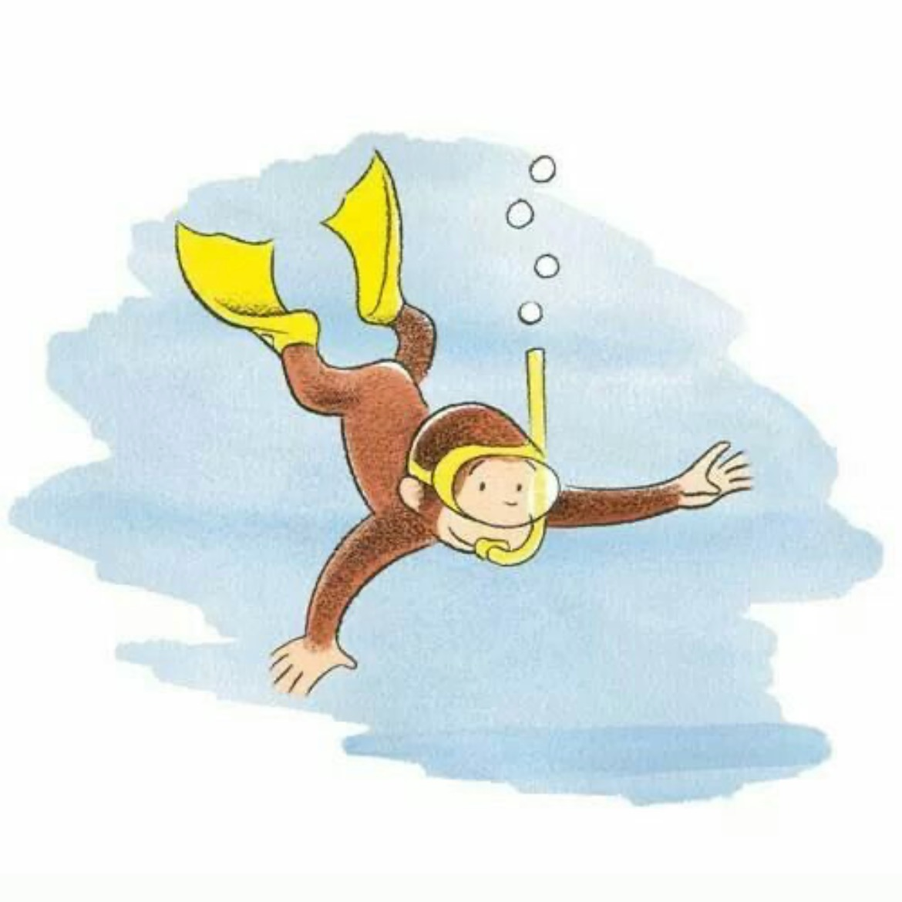

I'm Suzanne Kiser, a Hospitality and Tourism major that loves photography and travel
Blog post
TikTok Mukbangs:Harmless Fun or a Dangerous Influence on Eating Habits?
Are TikTok mukbangs just harmless entertainment, or do they have a deeper impact on our eating habits? This blog post explores the rise of mukbang culture, its influence on viewers' relationships with food, and whether it promotes unhealthy consumption patterns. Dive into the discussion on digital dining trends and their real-world effects!
Read
Video
Down at the River Shack
Discover the charm of our family's river shack, nestled in a quaint small town in Virginia. This video captures that nostalgic feeling reminding you of carefree summer days, quiet mornings on the water, and the warmth of family traditions. This hidden gem invites you to slow down and rediscover the magic of small-town life. Help us celebrate and promote local tourism by sharing the one-of-a-kind experiences Rappahannock, Virginia has to offer.
Watch
Podcast
Hokie Tales
Thinking about becoming a Hoke? From jumping to "Enter Sandman" to late-night adventures and unexpected friendships, Hokie Tales shares the real moments that define student life at Virginia Tech. Whether you're excited, nervous, or just curious -- this is what it's really like at VT!
Listen